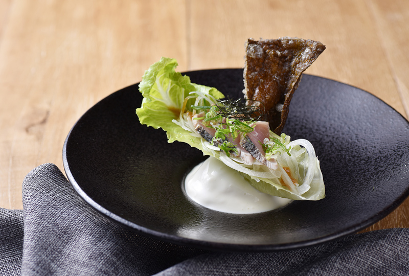
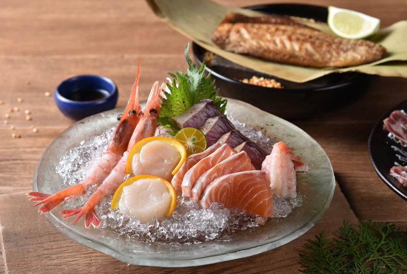
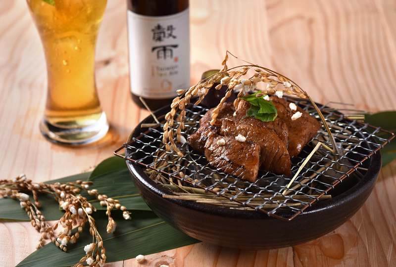
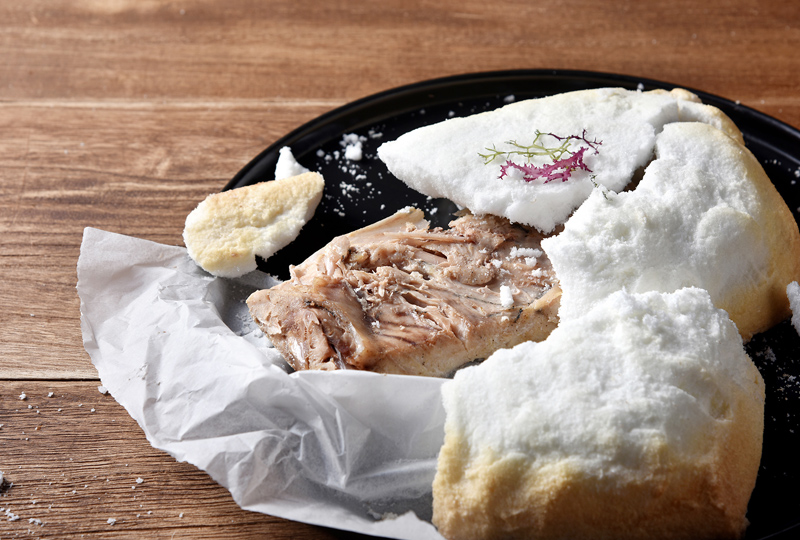
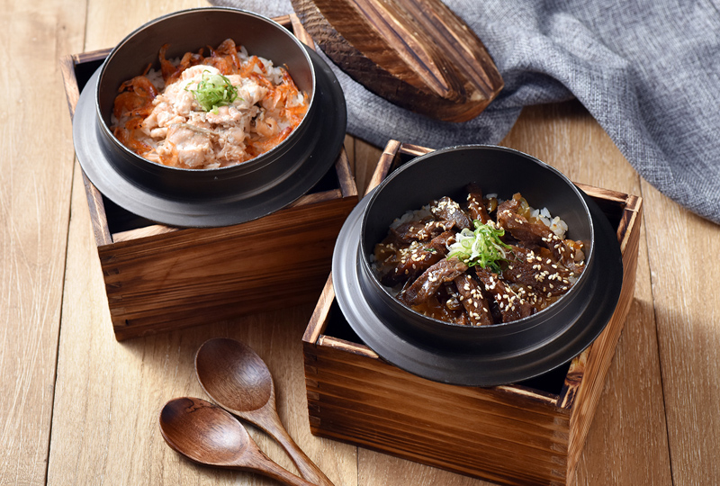

<!DOCTYPE html PUBLIC "-//W3C//DTD XHTML 1.0 Transitional//EN" "http://www.w3.org/TR/xhtml1/DTD/xhtml1-transitional.dtd">
<html xmlns="http://www.w3.org/1999/xhtml">
<head>
<meta http-equiv="Content-Type" content="text/html; charset=utf-8" />
<link href="menu-style.css" rel="stylesheet" type="text/css" />
<script type="text/javascript" src="away.js"></script>
<title>藝奇 夏日豐收祭</title>
</head>

<body>
<div id="WRAPPER"><!--最大框-->
 <div id="HEADER"><!--選單區塊-->
           <div id="NAV"><!--選單-->
          <a href="index.html" id="LOGO"></a>
          <ul>
            <li><a href="menu.html">推薦菜色</a></li>
            <li><a href="onsale.html">啤酒優惠</a></li>
            <li><a href="deadline.html">時段限定</a></li>
            <li><a href="contact.html">尋訪藝奇</a></li>                        
          </ul>
          </div>
</div><!--選單區塊結束-->
<div id="BOX-1"><!--第一大區塊-->
</div><!--第一大區塊結束-->

<div id="BOX-2"><!--第二大區塊-->
<p>在豐收的夏季，依節氣品嚐新鮮食材</br>
現流的漁獲、清爽的時蔬、甜美的果實、閃著光澤的新米</br>
以日式手法與心藝料理而成，成就美好的味道記憶</p>
</div><!--第二大區塊結束-->

<div id="BOX-3"><!--第三大區塊-->


  <div class="tab-content" id="con1"><!--圖片區塊1-->
    
    <div class="detail"><!--文字區塊1-->
      <h1>日式牛蒡雞湯</h1>
      <p>營養豐富的牛蒡、黑瓜及雞肉熬煮而成，<br />
入口甘甜、層次豐富，夏季限定的美味養生湯品。</p>

    </div><!--文字區塊1結束-->
  </div><!--圖片區塊1結束-->
  
  
  <div class="tab-content" id="con2"><!--圖片區塊2-->
    
    <div class="detail"><!--文字區塊2-->
      <h1>鰹魚優格洋芋</h1>
      <p>以蘿美生菜包裹炙燒鰹魚、洋蔥及和風醬汁，<br />
搭配優格洋芋，口感酸甜爽口又開胃。</p>
    </div><!--文字區塊2結束-->
  </div><!--圖片區塊2結束-->
  
  
  <div class="tab-content" id="con3"><!--圖片區塊3-->
    
    <div class="detail"><!--文字區塊3-->
      <h1>刺身盛合</h1>
      <p>特選季節新鮮海味，緊實鮮甜的肉質品嚐海洋最純粹的甘美味。<br />
(依人數以拼盤方式呈現，此為2人份示意圖)</p>
    </div><!--文字區塊3結束-->
  </div><!--圖片區塊3結束-->
  
  
  <div class="tab-content" id="con4"><!--圖片區塊4-->
    
    <div class="detail"><!--文字區塊4-->
      <h1>稻香石燒豚</h1>
      <p>上等豚排以獨門日式醬汁烘烤，入口充滿稻穗香氣，<br />
搭配栗子地瓜，展現豐饒之味。。</p>
    </div><!--文字區塊4結束-->
  </div><!--圖片區塊4結束-->
  
  
  <div class="tab-content" id="con5"><!--圖片區塊5-->
    
    <div class="detail"><!--文字區塊5-->
      <h1>鹽封鮪魚下巴</h1>
      <p>以厚厚的鹽包裹鮪魚下巴烘烤，封住鮪魚的鮮嫩，<br />
魚肉清甜多汁，打開鹽封的瞬間令人期待又驚喜！</p>
    </div><!--文字區塊5結束-->
  </div><!--圖片區塊5結束-->
      
      
  <div class="tab-content" id="con6"><!--圖片區塊6-->
    
    <div class="detail"><!--文字區塊6-->
      <h1>釜飯</h1>
      <p>特選在地好米「馥米」，本季特別推出櫻花蝦鮮魚<br />
日式牛肉兩種口味，Q彈飽滿、風味深遠的暖心日本味。</p>
    </div><!--文字區塊6結束-->
  </div><!--圖片區塊6結束-->


 
 <ul class="listReset switch">
    <li><a href="javascript:;" id="tab1">日式牛蒡雞湯</a></li>
    <li><a href="javascript:;" id="tab2">鰹魚優格洋芋</a></li>
    <li><a href="javascript:;" id="tab3">刺身盛合</a></li>
    <li><a href="javascript:;" id="tab4">稻香石燒豚</a></li>
    <li><a href="javascript:;" id="tab5">鹽封鮪魚下巴</a></li>
    <li><a href="javascript:;" id="tab6">釜飯</a></li>
  </ul>
</div><!--第三大區塊結束-->

  <div id="BOX-4"><!--第三大區塊-->
  <a href="http://www.ikki.com.tw/menu.html"></a>

  </div><!--第三大區塊結束-->

</div><!--最大框結束-->
</body>
</html>
